Co-op Commander Guide: Zeratul
Dark Prelate
Sections on this Page
Commander Summary
Zeratul uses a very small force of powerful units that he strengthens as he finds Xel'Naga Artifacts.

Level Unlocks
| Level/Icon | Name | Description |
|---|---|---|
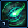 |
Power of the Xel'Naga | Zeratul has a 100 starting supply and his units have increased life and damage. Buildings do not require Pylon power and units cannot be warped directly onto the battlefield. Zeratul's Ancient Nexus can automatically construct Ancient Assimilators. |
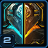 |
Prophecy Fulfilled |
Unlocks the ability for Zeratul to find the third and final Artifact Fragment. Once all Artifacts are found, Zeratul unlocks the following abilities:
|
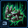 |
Passageway Enhancement Cache 1 |
Unlocks the following Passageway-level Artifact upgrades after the second Artifact Fragment is found:
|
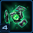 |
New Unit: Xel'Naga Abrogator |
Robotic Disruption unit. Can use Purification Nova to deal heavy area damage. Built at the Constructs Facility. Can attack ground units. |
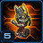 |
Tesseract Enhancement Cache |
Unlocks the option to select the following Artifact abilities:
|
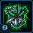 |
Constructs Enhancement Cache 1 |
Unlocks the following Constructs-level Artifact upgrades after the second Artifact Fragment is found:
|
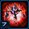 |
Path of the Void |
Unlocks the option to select the following Artifact abilities:
|
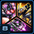 |
Empowered Legions |
Legendary Legions gain new abilities once the third Artifact Fragment is found:
|
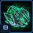 |
New Unit: Xel'Naga Void Array | Flying wormhole generator. Builds two at a time. Can deploy to create a link between all Xel'Naga Void Arrays on the field. |
| Chronometry | Reduces the build time of units produced by the Xel'Naga Passageway and the Constructs Facility by 50%. | |
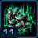 |
Passageway Enhancement Cache 2 |
Unlocks the following Passageway-level Artifact upgrades after the third Artifact Fragment is found:
|
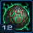 |
Dark Agency | Reduces the supply cost of Xel'Naga Shieldguards to 1. Reduces the supply cost of a pair of Xel'Naga Void Arrays to 1. Reduces the supply cost of Xel'Naga Watchers to 0. |
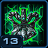 |
Constructs Enhancement Cache 2 |
Unlocks the following Constructs-level Artifact upgrades after the third Artifact Fragment is found:
|
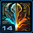 |
Purity of Perfection | The Avatar of Form gains the ability to summon Charged Crystals that can individually cast miniature Psionic Storms. The Avatar of Essence gains the ability to transform all enemy units in a large area into a lower evolutionary form. |
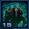 |
Purity of Will | Zeratul will gain additional shields (+50), increased Shadow Cleave damage (+10), and additional charges of Blink (+1) with each Artifact Fragment he finds. |
Highlighted rows denote large power spikes for the commander.
Achievements
The commander-specific achievements for Zeratul are:
| Achievement | Name | Description |
|---|---|---|
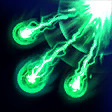 |
Bank Shot, Pocket Natural | Deal 2,000 damage with the Xel'Naga Abrogator's Cluster Novas. |
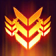 |
Devolution Retribution | Kill 200 devolved enemies in a single game. |
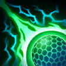 |
Have a Portable Charger? | Recharge 5,000 shields on allied units in Co-op Missions. |
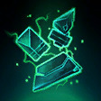 |
That Belongs in a Museum! | Complete the Xel'Naga Artifact within 12 minutes on Hard difficulty. |
Artifact Abilities
The artifact abilities for Zeratul, at level 15, with no mastery points added are shown below. Only one ability from each set can be selected.
Legion Calldowns (costs 800 minerals to deploy):
| Calldown | Name | Description | Recommended Usage | Numbers |
|---|---|---|---|---|
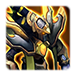 |
Telbrus Legion | Call down Telbrus and his legendary legion of Zealots to aid in the battle. This legion cannot be directly controlled but can be guided via the top-bar and will fight for 60 seconds. | Generally not as useful as other legions but reasonably effective against Zerg compositions. However, it can be useful on missions like Dead of Night. |
|
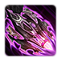 |
Zoraya Legion | Call down Zoraya and her legendary legion of Void Rays to aid in the battle. This legion cannot be directly controlled but can be guided via the top-bar and will fight for 60 seconds. | Provides great potential for fast-expanding, even on contested maps. If bases are close to each other, players can even clear their ally's expansions. |
|
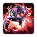 |
Serdath Legion | Call down Serdath and his legendary legion of Dark Archons to aid in the battle. This legion cannot be directly controlled but can be guided via the top-bar and will fight for 60 seconds. | Powerful for breaking into tough-to-push fortifications by stealing high-value enemy units. Can also be used to significantly weaken powerful attack waves by spawning on top of it. |
|
The number of fragments collected affect the Legion. Each fragment will add 100 shields to the hero unit (Telbrus, Zoraya, Serdath). Additionally, for Telbrus and Serdath, each fragment will add 100 energy to those heroic units. Artifact fragments also affect how many units are spawned from the Legion. This is summarized in the table below (numbers do not include the Hero unit):
| Artifacts | Telbrus | Zoraya | Serdath |
| 0 | 10 | 4 | 3 |
| 1 | 13 | 5 | 4 |
| 2 | 16 | 6 | 5 |
| 3 | 16 | 6 | 5 |
The Telbrus Legion ability deploys a Telbrus Legion onto the battlefield. The units have abilities themselves, shown below:
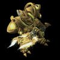
Zealot
| Ability | Name | Description | Cooldown |
|---|---|---|---|
 |
Charge | Requirements: 3rd Xel'Naga Artifact. Intercepts enemy ground units and increases movement speed. |
10 seconds |
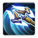 |
Whirlwind | Deals 10 damage per second to all nearby enemy units. Lasts 3 seconds. | 10 seconds |
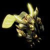
Telbrus
| Ability | Name | Description | Cooldown | Energy Cost |
|---|---|---|---|---|
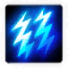 |
Psionic Storm | Creates a storm of psionic energy that lasts 4 seconds, causing up to 112 damage to all enemy units and restoring 112 shields to all friendly units in a large target area. | 2.5 seconds | 75 |
| Feedback | Requirements: 3rd Xel'Naga Artifact. Drains all energy from the target. Deals 1 damage per point of energy. |
10 seconds | 50 |
The Serdath Legion ability deploys a Serdath Legion onto the battlefield. The units have abilities themselves, shown below:
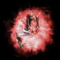
Dark Archon
| Ability | Name | Description | Cooldown | Energy Cost |
|---|---|---|---|---|
 |
Mind Control | Temporarily grants Zeratul control of a target enemy unit. Controlled units self-destruct after 120 seconds. Heroic units are immune. |
15 seconds | 150 |
| Maelstrom | Requirements: 3rd Xel'Naga Artifact. Temporarily stuns enemy units and structures in an area of effect for 3 seconds. |
15 seconds | 50 |
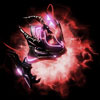
Serdath
| Ability | Name | Description | Cooldown | Energy Cost |
|---|---|---|---|---|
|
Mind Control | Temporarily grants Zeratul control of a target enemy unit. Controlled units self-destruct after 120 seconds. Heroic units are immune. |
15 seconds | 150 |
| Maelstrom | Requirements: 3rd Xel'Naga Artifact. Temporarily stuns enemy units in an area of effect for 3 seconds. |
15 seconds | 50 |
Fragment 1:
| Calldown | Name | Description | Recommended Usage | Numbers |
|---|---|---|---|---|
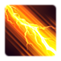 |
Stasis Beam | Fires a beam emanating from the Artifact Holder that places enemies in stasis for 15 seconds. Units in stasis cannot move, attack, be attacked, or be affected by abilities. | Can be useful to temporarily take high value targets out of combat while dealing with weaker units first. However, targeting is dependent on the position of the Artifact Holder, making it extremely difficult to land several hits in a straight line. | Cooldown: 90 seconds |
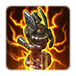 |
Deploy Tesseract Monolith | Deploys a Tesseract Monolith at the target location. Tesseract Monoliths can stun enemies, project themselves, and protect themselves from damage. | Exremely powerful when projected. Multiple can be used to stun attack waves and help when pushing into enemy bases. |
|
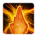 |
Void Suppression Crystal | Summons an invulnerable Void Suppression Crystal that slows the movement and attack speeds of enemy units by 70% and disables enemy structures. The Void Suppression Crystal is controllable and lasts for 30 seconds. | Great ability to use when pushing into heavily-fortified positions. Despite the short timer on the crystal, 30 seconds should be more than enough time to clear out high value targets and even an entire base if timed correctly. | Cooldown: 180 seconds |
The Deploy Tesseract Monolith ability brings a Tesseract Monolith onto the battlefield. This unit has abilities itself, shown below:
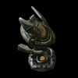
Tesseract Monolith
| Ability | Name | Description | Cooldown |
|---|---|---|---|
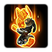 |
Shade Projection | Requirements: Core Forge and 2nd Xel'Naga Artifact Fragment Projects the Tesseract Monolith to a target location for 60 seconds, transferring all of its shields and its weapon. The Tesseract Monolith is deactivated while this ability is active. |
120 seconds |
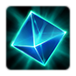 |
Shade Barrier | Requirements: Core Forge and 3rd Xel'Naga Artifact Fragment Absorbs up to 100 damage. Lasts for 10 seconds. |
60 seconds |
Fragment 2:
| Passive | Name | Description | Recommended Usage |
|---|---|---|---|
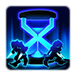 |
Steadfast Reinforcements | Increases the duration of Zeratul's Legion and Avatar calldowns by 50%. | Useful for players that prefer to utilize their Legions and Avatars more effectively. However, do note that they do tend to die relatively quickly and therefore, this passive upgrade may not provide as much value as initially intended. |
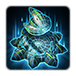 |
Tesseract Matrix | Decreases the cooldown of Shade Projection by 25%. Increases the damage absorbed by Shade Barrier by 100%. | Great passive for players that rely on the Shade Projections to pushing/defending. It can significantly strengthen Zeratul's late-game as well, where cannons are used as a mineral dump. |
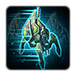 |
Void Blink | Reduces the cooldown of Zeratul and his units' Blink abilities by 50%. | This passive compounds extremely well with the Void Templar's Void Fury upgrade as well as the Ambusher's Vengeance of the Void. Players that intend on using mass Ambusher builds should consider this upgrade. |
Fragment 3:
| Ability | Name | Description | Recommended Usage | Cooldown |
|---|---|---|---|---|
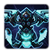 |
Avatar of Form | Call down the Avatar of Form, the embodiment of psionic potential, at the target location. The Avatar of Form is controllable and will fight for 60 seconds. | Generally not as useful as the Avatar of Essence, due to it not being able to buff your units. Can be used when doing Cannon-only builds. Additionally, the spawned Charged Crystals have a very low chance of casting Psionic Storms, and have a very low HP. Can be useful against certain Enemy Compositions with numerous, low-HP units like Swarmy Zerg or against Infested units. | 300 seconds |
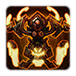 |
Avatar of Essence | Call down the Avatar of Essence, the embodiment of evolutionary potential, at the target location. The Avatar of Essence is controllable and will fight for 60 seconds. | Extremely powerful Avatar due to the fact that it can devolve all non-heroic enemy units (including Infested). Heroic units will have their Attack speed and movement speed reduced by 50%. One devolution wave can significantly reduce the power level of the enemy forces. Additionally, it may be useful to pre-buff your units with the Avatar by spawning it a few seconds before you expect to take an engagement so your units will have an attack speed buff applied to them. | 300 seconds |
The Avatar of Form ability brings an Avatar of Form onto the battlefield. This unit has abilities itself, shown below:
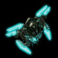
Avatar of Form
| Ability | Name | Description | Cooldown |
|---|---|---|---|
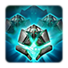 |
Summon Charged Crystals | Marks a target area on the ground. After 2 seconds, the Avatar of Form deals 100 damage and summons 10 Xel'Naga Charged Crystals at the target location. Charged Crystals have a 10% chance to cast a miniature Psionic Storm with each attack, dealing 40 damage to all enemy units in a small area over 4 seconds. |
25 seconds |
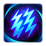 |
Psionic Gale | Creates a storm of psionic energy that lasts 4 seconds, dealing 160 damage to all enemy units in a large target area. Does not damage friendly units. | 10 seconds |
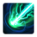 |
Psionic Blast | Charges up, dealing 500 damage to a target unit after 3 seconds. | 10 seconds |
The Avatar of Essence ability brings an Avatar of Essence onto the battlefield. This unit has abilities itself, shown below:
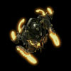
Avatar of Essence
| Ability | Name | Description | Cooldown |
|---|---|---|---|
| Devolution Wave | Transforms all enemy units in a large area around the Avatar of Essence into a lower evolutionary form. | 20 seconds |
Devolve will Devolve all non-heroic, non-MapBoss enemy units within 10 range of the Avatar of Essence. For Heroic units, Attack speed and Movement speed are reduced by 50%. Devolve works in a very similar way to the Transmutation Mutator. All units caught within the Devolve wave will Devolve to one tier lower. The tier list is shown below:
| Tier | Devolves Into |
|---|---|
| 1 |
|
| 2 |
|
| 3 |
|
| 4 |
|
| 5 |
|
| 6 |
|
| 7 |
|
| 8 |
|
For any units not included on the list, their tier will equal their supply cost, with a minimum tier of 1.
Devolve will not create the following units as a result of the Devolution Wave:
- Baneling
- Disruptor
- Liberator (in Siege Mode)
- Oracle
- Reaver
- Scourge
- Siege Tank (in Siege Mode)
All units present within 10 range of the Avatar will get an evolution buff level every 15 seconds. When out of range, they will lose an evolution buff level every 15 seconds.
| Buff Level | Attack Speed | Damage Reduction |
|---|---|---|
| 1 | 25% | 10% |
| 2 | 50% | 20% |
| 3 | 75% | 30% |
| 4 | 100% | 40% |
Sub-Ascension Leveling
Difficulty: Easy
Use Ambushers and Enforcers during the early stages of leveling as part of your core army composition. Once you get to level 3, Ambushers damage output increases a lot due to their powerful Blink damage upgrade. Be wary of your use of the Stasis Beam, which is a bad calldown. It should not be used to Stasis an entire attack wave, but cut the wave into more manageable parts. Rely on your Legion calldowns more aggressively, even if it means cutting unit production.
Masteries
Below are the three Power Sets for Zeratul with the recommended point allocations for each. Note that these are meant to serve a general, all-purpose build that is effective across all maps with no Prestiges selected. You are highly encourged to change these masteries to suit your playstyle and particular challenges you face (e.g. Weekly Mutations).
Power Set 1:
| Power | Value | Recommended Points to Add | Further Considerations |
|---|---|---|---|
| Zeratul Attack Speed | 1.5% per point 45% maximum |
? | The choice here depends on how you use Zeratul compared to his units. If you prefer to use a cannon build, Zeratul's attack speed is a better investment. Additionally, your ability to micro Zeratul can provide you with a lot of value from Zeratul Attack Speed. |
| Combat Unit Attack Speed | 0.5% per point 15% maximum |
? |
A player's playstyle will determine which mastery to use. For players that prefer to micro Zeratul, the Attack Speed Mastery can be very beneficial, especially when combined with the Avatar of Essence.
Power Set 2:
| Power | Value | Recommended Points to Add | Further Considerations |
|---|---|---|---|
| Artifact Fragment Spawn Rate | -2 sec per point -60 sec maximum |
30 | Artifact Fragments directly correlate to Zeratul's power level in the game and should be prioritized. Support Calldown Cooldown Reduction may be useful for players that prefer to spam them. |
| Support Calldown Cooldown Reduction | -1% per point -30% maximum |
0 |
The Support Calldowns, while strong, do not provide as much of a ramp up in power level of the commander as the Artifact Fragments. It is much more efficient to increase the spawn rate of Artifact Fragments.
Power Set 3:
| Power | Value | Recommended Points to Add | Further Considerations |
|---|---|---|---|
| Legendary Legion Cost | -1% per point -30% maximum |
0 | Players that utilize Avatars often can find some benefit for the Avatar Cooldown. The Legendary Legion cost makes it easy to spam them, and for players that use them to fast-expand, allows them to expand faster. |
| Avatar Cooldown | -4 sec per point -120 sec maximum |
30 |
While the Legion calldown mastery allows players to expand quicker, the cost reduction is not significant enough to justify its use. The Avatar mastery is recommended for more general play.
Prestiges
Below are the prestiges for Zeratul. Note that "Effective Level" is the level at which the prestige achieves it full effect.
| Level | Name | Description | Effective Level | Notes |
|---|---|---|---|---|
| 1 | Anakh Su'n |
|
1 |
|
| One of the primary uses for the Void Seeker for Zeratul play is quickly getting to Artifact Fragments. You can mitigate the disadvantage by using Void Arrays or Blink to transport Zeratul. The prestige sacrifices that for a Supercloak that Zeratul can use to push into enemy bases without taking losses. It is a powerful prestige that helps Zeratul mitigate losses of his expensive units. This prestige works very well when both players coordinate a push into an enemy base, as both players can take advantage of the Supercloak to pick off high-priority targets. | ||||
| Level | Name | Description | Effective Level | Notes |
|---|---|---|---|---|
| 2 | Knowledge Seeker |
|
1 |
|
| This prestige works well for players that can quickly find their Artifact Fragments. The effectiveness of this prestige is dependant on the length of the mission. Fixed-time missions are best for this, as the longer game time allows Zeratul's units to upgrade more and more. This prestige works best with the Artifact Spawn mastery. The disadvantage can be further mitigated by using Tesseract Cannons. As they are structures, their costs are not increased from this prestige. | ||||
| Level | Name | Description | Effective Level | Notes |
|---|---|---|---|---|
| 3 | Herald of the Void |
|
1 |
|
| This prestige sacrifices the third artifact set of upgrades (as well as the Avatars) for a more versatile hero unit. This prestige works best on shorter maps and missions where hyper-aggressive hero play is rewarded, as a lot of the units will not have the defensive upgrades that are provided with the third Artifact Fragment. This prestige works well against certain mutators like Minesweeper, as the Tornadoes can damage burrowed units without the need for any detection. | ||||
All of Zeratul's prestiges are solid and a player can get by general play using any (or none of them). The optimal prestige selection is highly dependant on the map that is being played. For example, Knowledge Seeker works best on long maps, whereas Herald of the Void works best on short maps.
Hero Unit
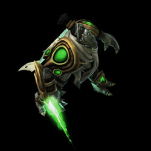
Spawn time: 4:00
Respawn time: 1:00
Zeratul has a Passive called "One With the Shadows". Zeratul is permanently cloaked. He becomes immune to damage for 0.5 seconds after being attacked. Cannot occur more than once every 5 seconds.
The abilities for Zeratul are:
| Ability | Name | Description | Cooldown |
|---|---|---|---|
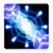 |
Blink | Teleports Zeratul to a nearby location. | 8 seconds |
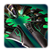 |
Summon Void Seeker | Transports Zeratul to a target location. | 120 seconds |
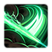 |
Shadow Cleave | Deals 100 damage to nearby enemies. | 12 seconds |
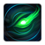 |
Prophetic Vision | Shows the location of or unearths a hidden Xel'Naga Artifact Fragment. | 10 seconds if Fragment is not found Remaining seconds until next Fragment spawns if found. |
The upgrades for Zeratul are:
| Upgrade | Name | Effect |
|---|---|---|
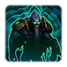 |
Purity of Will | Zeratul will gain additional shields (+50), increased Shadow Cleave damage (+10), and additional charges of Blink (+1) with each Artifact Fragment he finds. |
Recommended Army Composition
The recommended army composition for Zeratul is below. Note that this assumes no Prestige talent selected and recommended Mastery Allocations. This is a basic recommendation for your army framework. It is recommended to gain an understanding for each of the units in the Units section and further add tech units so that you are able to better handle the situations you face.
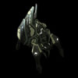
Mass Ambusher builds work very well for Zeratul, but care will need to be taken in how you engage high-damage attack waves. Shieldguards should be used to quickly replenish the shield damage taken by your army. Use Void Arrays to move your army around the map and handle attack waves.
Add Enforcers to your army if dealing with large numbers of Armored air units.
Combat Units
For more information on Zeratul's unit stats, comparison between units and upgrade calculations, visit the Data Tables page.
Zeratul's combat units are listed below:
Xel'Naga Ambusher
- Good for providing anti-air support to an army with strong anti-ground capabilities
- Does a good amount of burst damage if enough Blink charges are stored.
Skills:
| Skill | Name | Description | Cooldown | Energy Cost |
|---|---|---|---|---|
 |
Predictive Blink | Teleports this unit to a nearby target location. | 0 seconds | 0 |
Upgrades:
| Upgrade | Name | Effect | Fragments Required |
|---|---|---|---|
| Predictive Blink | Allows this unit to teleport to a nearby target location. Xel'Naga Ambushers will automatically teleport to safety once their hulls have been breached. | 1 | |
| Vengeance of the Void | Blinking leaves behind a Void Apparition that attacks once for 50% of the unit's weapon damage. | 2 | |
| Phase Battery | This unit can now store up to 3 charges of Predictive Blink and regains a charge every 8 seconds. | 3 |
Xel'Naga Shieldguard
- Recommended to have a few in your army to replenish shields to prevent unnecessary losses, especially considering each unit is expensive.
- Reflection shield only works on projectiles (e.g. Stalker attacks) and not Hitscan (e.g. Marine attacks) shots.
Skills:
| Skill | Name | Description | Cooldown | Energy Cost |
|---|---|---|---|---|
| Shield Recharge | Recharges the shields of a friendly Protoss unit. Restores 4 shields per 1 energy. |
0 seconds | 0 | |
 |
Reflection Shield | Creates an aura that reflects 50% of all projectiles back to enemy attackers. Lasts 15 seconds. Can be set to Autocast. | 180 seconds | 0 |
Upgrades:
| Upgrade | Name | Effect | Fragments Required |
|---|---|---|---|
 |
Shield Recharge | Allows this unit to recharge the shields of a friendly Protoss unit. | 1 |
| Eclipse Protocol | Increases the energy regeneration of this unit by 100%. | 2 | |
| Reflection Shield | Allows this unit to create an aura that reflects 50% of all projectiles back to enemy attackers. | 3 |
Void Templar
- Does great anti-ground DPS.
- Can take a lot of damage and should be backed up with Shieldguards.
- Void Fury provides a significant powerspike due to high burst-damage capabilities.
Skills:
| Skill | Name | Description | Cooldown | Energy Cost |
|---|---|---|---|---|
 |
Blink | Allows the Void Templar to teleport to a nearby target location. | 8 seconds | 0 |
Upgrades:
| Upgrade | Name | Effect | Fragments Required |
|---|---|---|---|
| Blink | Allows this unit to teleport to a nearby target location. | 1 | |
| Void Fury | When this unit Blinks, it will deal 50 damage to units caught in its path. | 2 | |
| Back to the Shadows | When this unit takes fatal damage, it retreats to the Void and regenerates its health and shields over 10 seconds. Cannot occur more than once every 180 seconds. | 3 |
Xel'Naga Enforcer
- Does very high anti-air DPS.
- Not as good as regular immortals for anti-ground, due to higher costs, and slightly reduced range.
- Massing them is viable, but not efficient, because their shots are projectiles, leading to a lot of potential overkill on targets and wasted shots.
Skills:
| Skill | Name | Description | Cooldown | Energy Cost |
|---|---|---|---|---|
 |
Barrier | Absorbs up to 100 damage. Lasts for 10 seconds. | 60 seconds | 0 |
Upgrades:
| Upgrade | Name | Effect | Fragments Required |
|---|---|---|---|
| Barrier | Allows this unit to absorb 100 damage. Lasts for 10 seconds. | 1 | |
| Force Cannon | Allows this unit's anti-air weapon to knock back enemy air units, dealing 25% of its damage to units caught in the path of the blast. | 2 | |
| Eternity Barrier | Increases the damage absorption of the Xel'Naga Enforcer's Barrier by 300% and fully repairs its hull damage. | 3 |
Xel'Naga Abrogator
- Great unit for dealing with Enemy Compositions with numerous, low-HP units like Swarmy Zerg or against Infested units.
- Very good defensive unit for Infested maps.
- Relatively ineffective when massed due to overkills.
Skills:
| Skill | Name | Description | Cooldown | Energy Cost |
|---|---|---|---|---|
| Purification Nova | Shoots out a ball of energy that detonates 3 seconds or on contact with an enemy unit, dealing 100 splash damage to nearby ground units and structures. The Xel'Naga Abrogator is immobile while this is active. | 12 seconds | 0 |
Upgrades:
| Upgrade | Name | Effect | Fragments Required |
|---|---|---|---|
| Nova Battery | Reduces the cooldown of Purification Nova by 50%. | 2 | |
| Cluster Nova | When a Purification Nova explodes, it generates three smaller Novas that deal 50 damage each to enemy units in their path. | 3 |
Xel'Naga Void Array
- A must-have in Zeratul's army to allow for great mobility around the map.
- Can be used to quickly reinforce units on the battlefield.
Skills: None
Upgrades:
| Upgrade | Name | Effect | Fragments Required |
|---|---|---|---|
| Infinite Void | Grants the Xel'Naga Void Array unlimited capacity. | 2 | |
| Shield Boosters | Nearby units regenerate an additional 2 shields per second. | 3 |
Build Order
Below is the standard economic build order for Zeratul (assumes max points in Legion Cost Reduction). For more information on how to read and construct your own build orders, please check the Build Order Theory page.
18 Probe -> Expo
19 Zoraya Legion
21 Nexus
Gameplay Guide
Playstyle Traps
None.
Legion Expands
One of the advantages of Zeratul is his access to powerful Legion calldowns which can be used to not only clear expansion rocks, but also clear contested expansions and sometimes even clear their ally's expansion too. The table below explains how to maximize utilization of your first Legion calldown.. Note that for some missions (like Oblivion Express), the Legion expand is simple because clearing both expansions is easy and therefore, no details will be provided.
| Map | Legion Expand |
|---|---|
| Chain of Ascension | Clear your expansion and direct the Legion towards the nearest enemy camp. |
| Cradle of Death | This expand is incredibly difficult and will require a lot of practice. Step 1: Step 2: Notes:
|
| Dead of Night | No expansion available. |
| Lock & Load | You can fully clear both expansion with one Zoraya Legion calldown shown below: |
| Malwarfare | Clearing both expansions is difficult because units that cannot hit air will run away from the Zoraya Legion. You may improve the effectiveness of your Legion by luring enemy units with your Probe into the Legion. Be careful with enemy Zerg compositions. When structures are destroyed, they will spawn broodlings that can kill your Probe. |
| Miner Evacuation | This expand is incredibly difficult and will require a lot of practice. Step 1: Make your way to Evacuation Ship #4 in the top-left of the map. Note: If the Evacuation Ship to the right of the expansion area is destroyed (beacon not present), you may go around the entire expansion area and avoid any threat inside it. Step 2: Drop a Serdath Legion in that area. This causes Infested Banshees to unburrow and get Mind Controlled. Step 3: Use these Banshees to clear the Expansion. Make sure you do not lose any. There are many Infested Marines present in that area. Notes:
|
| Mist Opportunities | Due to the large distance between expansions, it is not possible to clear both expansions before the Legion's timer runs out. |
| Oblivion Express | Simple expand because the expansions are next to each other. |
| Part & Parcel | The pathing for the fast-expand is race-dependent (similar to Alarak's fast expand). |
| Rifts to Korhal | It is generally really difficult to deal with the first attack wave with the Legion used to clear the expansion. Zoraya Legion takes approximately 25 seconds to clear the Expansion rocks. Additionally, the Legion takes roughly 25 seconds to reach the main ramp, allowing for only 10 seconds of attacking the first wave. Arrival of the initial attack wave at the top of the main ramp depends on the composition of the attack wave and can range from anywhere between 2:35 to 2:55. Therefore, it is better to use the Legion to defend against the first wave, then use whatever time is left to start clearing the rocks. The remaining rocks can be cleared with a few units. |
| Scythe of Amon | |
| Temple of the Past | Timing for this is really tight. The Legion will die when they have 0.1 seconds left on the timer. Step 1: Target the Zoraya Legion as shown below. It should look like below: Step 2: As soon as the Void Rays start attacking the rocks, place the pathing marker up to the gas rocks. If done correctly, one Void Ray will move to attack the top gas rock when the main rock break, while the rest of the Legion attack the lower gas rock. Step 3: As soon as the single Void Ray starts attacking the top gas rock, move the pathing marker down to your ally's lower gas rock. Use the minimap to do so. You may fine-tune the positioning once they start moving shown below. |
| The Vermillion Problem | It is not possible to clear both, your and your ally's expansion with one Zoraya Legion. Make sure you access the expansion from either the East or the South ramp, rather than the Northern ramp to avoid the defenders there. |
| Void Launch | Due to the large distance between expansions, it is not possible to clear both expansions before the Legion's timer runs out. |
| Void Thrashing | Due to the large distance between expansions, it is not possible to clear both expansions before the Legion's timer runs out. |
Artifact Spawn Locations
A key part of Zeratul gameplay is finding Artifact Fragments. These fragments directly correspond to the power level of your units and therefore, it is critical to get them as fast as possible. Assuming Artifact fragments are found as quickly as possible, Prophetic Vision incurs a 3-minute cooldown (assuming no masteries are added).
If an artifact is not found within a certain amount of time, the minimap will be pinged and a circle displaying the rough area to look shown to the player. Each hint makes the search radius smaller, making it easier for the player to find the artifact fragment. The hint timings are shown below and are also affected by the Zeratul Artifact Spawn mastery:
| Fragment | Hint 1 (Radius 35) | Hint 2 (Radius 25) | Hint 3 (Radius 15) |
|---|---|---|---|
| 1 | 5:00 | 6:00 | 7:00 |
| 2 | 10:00 | 11:00 | 12:00 |
| 3 | 15:00 | 16:00 | 17:00 |
Artifacts spawn within a certain distance away from either the Zeratul Artifact Container, or the mid-point of both player bases. There are many limitations as to where the artifact can spawn, from maximum walking distance and the total health of enemy units nearby. This technical data is listed below. A more visual guide is shown in the subsequent table.
To allow the table to fit, the column headers are referred as variable names instead as follows:
- Rmin: Minimum Spawning Distance away from the center.
- Rmax: Maximum Spawning Distance away from the center.
- Wmax: Maximum Walking Distance to Artifact Spawn Point away from the center. A maximum walking distance of 0 means there is no limit to the pathing length. You will see this value used on more open maps.
- HPmax: Maximum total HP of enemy units within 10 range of the Artifact spawn location
| Map | Fragment 1 | Fragment 2 | Fragment 3 | |||||||||
|---|---|---|---|---|---|---|---|---|---|---|---|---|
| Rmin | Rmax | Wmax | HPmax | Rmin | Rmax | Wmax | HPmax | Rmin | Rmax | Wmax | HPmax | |
| Chain of Ascension | 30 | 50 | 0 | 0 | 50 | 80 | 0 | 1000 | 80 | 110 | 0 | 1000 |
| Cradle of Death | 20 | 40 | 50 | 0 | 50 | 70 | 80 | 1000 | 70 | 90 | 110 | 1000 |
| Dead of Night | 30 | 100 | 60 | 0 | 50 | 100 | 100 | 1000 | 60 | 100 | 150 | 1000 |
| Lock & Load | 30 | 50 | 0 | 0 | 50 | 80 | 0 | 1000 | 80 | 100 | 0 | 1000 |
| Malwarfare | 30 | 50 | 0 | 0 | 50 | 80 | 110 | 1000 | 80 | 120 | 140 | 1000 |
| Miner Evacuation | 25 | 40 | 0 | 0 | 40 | 80 | 100 | 1000 | 80 | 100 | 130 | 1000 |
| Mist Opportunities | 30 | 50 | 0 | 0 | 50 | 80 | 0 | 1000 | 80 | 100 | 0 | 1000 |
| Oblivion Express | 20 | 40 | 60 | 1000 | 40 | 70 | 90 | 1000 | 60 | 90 | 130 | 1000 |
| Part & Parcel | 30 | 50 | 0 | 0 | 50 | 80 | 0 | 1000 | 80 | 110 | 0 | 1000 |
| Rifts to Korhal | 30 | 50 | 0 | 0 | 60 | 90 | 0 | 1000 | 80 | 110 | 0 | 1000 |
| Scythe of Amon | 30 | 50 | 0 | 0 | 50 | 80 | 0 | 1000 | 80 | 100 | 0 | 1000 |
| Temple of the Past | 30 | 50 | 0 | 0 | 50 | 80 | 0 | 0 | 80 | 100 | 0 | 0 |
| The Vermillion Problem | 20 | 40 | 0 | 1000 | 50 | 80 | 0 | 1000 | 80 | 100 | 0 | 1000 |
| Void Launch | 30 | 50 | 0 | 0 | 50 | 80 | 0 | 1000 | 80 | 100 | 0 | 1000 |
| Void Thrashing | 30 | 50 | 0 | 0 | 50 | 80 | 0 | 1000 | 80 | 100 | 0 | 1000 |
A more visual guide for the Artifact Spawn locations is shown below, with green, yellow and red areas denoting the spawn locations of the first, second and third artifacts. Note that because these locations are dependent on the nearby HP's of enemies, there will be some variance with different races, and if you have previously pushed into those locations.
Playstyle Tips
- Shades can be cancelled by clicking on the unit's Shade and pressing the ESC key. The shade will disappear, starting the cooldown. This allows you to only utilize the shades when you need them.
- If you are unsure on the location of an artifact, place waypoints around the map. Waypoints appear in Prophetic Vision, allowing you to find the artifact location quickly. A video is below:
- Throughout the mission, make Xel'Naga Watchers and place them in Watcher mode around the entire map. Granting vision of the entire map can be extremely powerful and synergizes very well with almost all commanders.
- Once you hit supply cap with your army, build Tesseract Cannons as a mineral dump in your base and Shade them across the map to defend and help your army push.
- Loading units into Void Arrays will prevent them from taking DoT (damage over time) damage.
Video Guides
The below videos demonstrate the various Legion expands explained earlier. Note that as of patch 4.11.3, Zeratul's Legion costs have been increased significantly. The expand will still take place in the same way, but at a later point in the game (~2 mins).